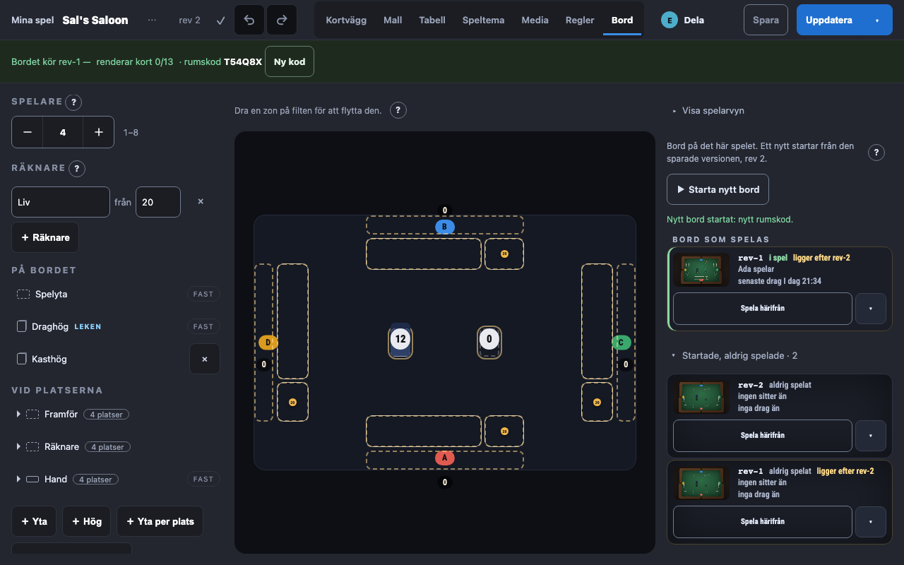
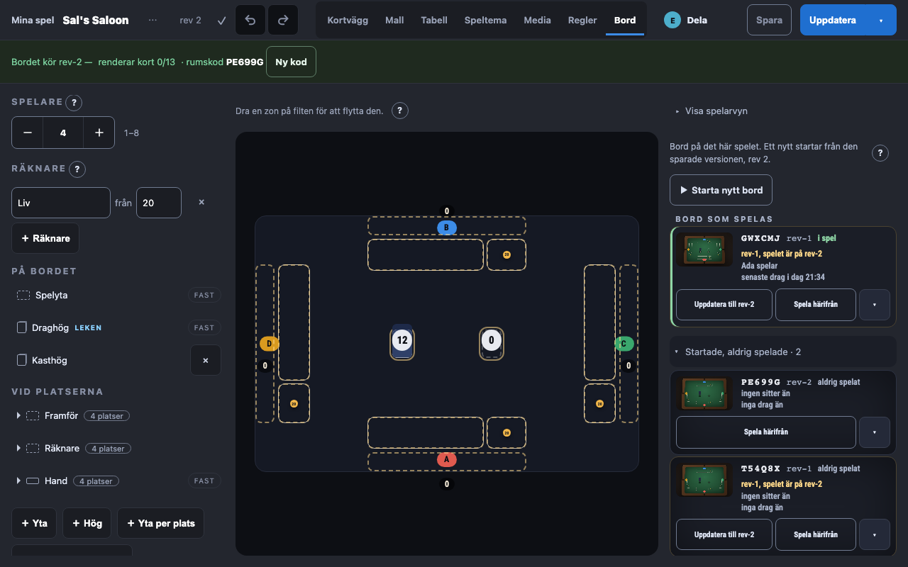
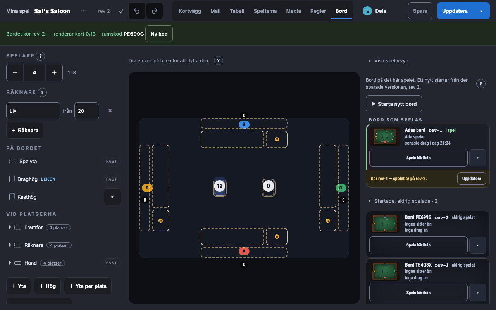
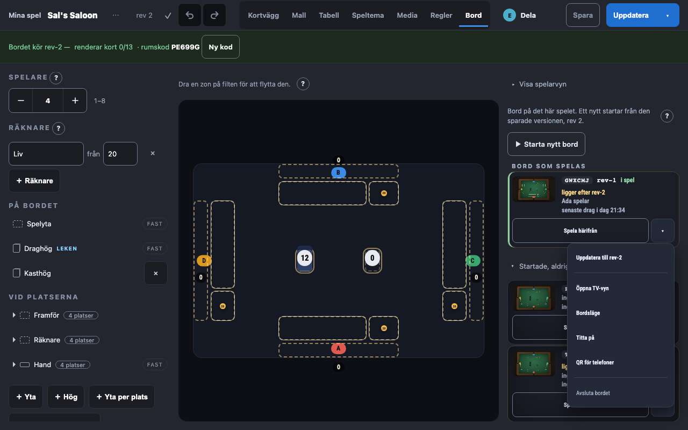

Bord-flikens rad: namnet och uppdateringen (#706)
Den byggda appen vid 1280 × 800, Sal's Saloon. Tre bord: Adas (rev-1, i spel), ett startat från huvudet (rev-2) och ett startat från kolumnen (rev-1); spelet har sparats till rev-2, så två rader ligger efter. I alla tre varianter är namnet rumskoden, «i dag» skrivs gement och statusraden säger koden i stället för uuid-prefixet.
I dag
«Nytt bord startat: 3c27…» med ett uuid-prefix som inte står på raden; «ligger efter rev-2» utan väg att uppdatera just det bordet.

A — Koden först, uppdateringen bredvid «Spela härifrån» (rekommenderad)
Rumskoden är radens namn, versionen står efter. En rad som ligger efter säger «rev-1, spelet är på rev-2» och får en andra konturknapp, «Uppdatera till rev-2», bredvid den som står redo. Syns direkt, och kostar ingen höjd.

B — Vem som sitter som namn, remsa under raden
Namnet är «Adas bord» när någon sitter, annars «Bord KOD». Att raden ligger efter är en egen remsa under den, med en mindre «Uppdatera». Tydligast, men det kostar en rad, och namnet byter när någon sätter sig.

C — Koden som etikett, uppdateringen först i menyn
Koden i en liten etikett före versionen; «ligger efter rev-2» står kvar, och «Uppdatera till rev-2» är menyns första val. Lugnast, men uppdateringen syns först när menyn öppnas.
